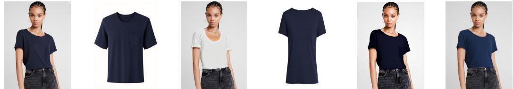

今日主线 · arXiv 更新 (v3)
V-JEPA 2.1：V-JEPA 系列更新到 dense image/video features，把 masked predictive loss、深层自监督和图像/视频 tokenizer 统一到同一表征路线
V-JEPA 系列更新到 dense image/video features，把 masked predictive loss、深层自监督和图像/视频 tokenizer 统一到同一表征路线。

V-JEPA 系列更新到 dense image/video features，把 masked predictive loss、深层自监督和图像/视频 tokenizer 统一到同一表征路线。
P0
高相关；详见方法、贡献和实验边界。
方法：V-JEPA 系列更新到 dense image/video features，把 masked predictive loss、深层自监督和图像/视频 tokenizer 统一到同一表征路线
 P0
P0
高相关；详见方法、贡献和实验边界。
方法：纯粹面向无监督视频 object-centric 表征，把 appearance 和 identity 拆成双状态 slot，直接命中视频自监督表示
 P1
P1
高相关；详见方法、贡献和实验边界。
方法：用跨模态 masked concept reconstruction 改造 CLIP/VLM compositionality，是视觉-语言自监督/弱监督表征的可迁移目标

P1高相关；详见方法、贡献和实验边界。
方法：把图像和视频 tokenization 放进同一个 ViT tokenizer，并用教师监督塑形 compact latent，是统一视觉 token 表征路线
 P1
P1
中高相关；详见方法、贡献和实验边界。
方法：把 WAM 从重建型视频 tokenizer 转到 representation-centric visual-action tokenizer，虽偏具身，但方法可迁移到视频 world model 表征